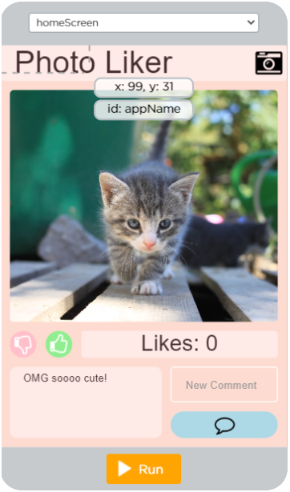
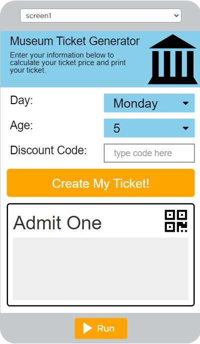
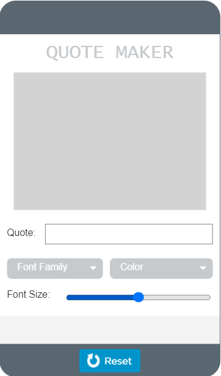

Lesson 1
In this lesson, we tried to understand how data was stored and processed by programs, and how that data was used.
What will be the code at the end of this program?
"var score
score = 3
score = score + 1
score = "The score is: " + score"
It will be “The score is 4”.
Lesson 2
In this lesson, we learned more about variables and how they are used to store and change information in a program.
Explain in your own words the process of creating and updating a variable. How does the Counter Pattern with Event work?
To create a variable, you first use the keyword "var" followed by another word in order to establish the variable, then using the "=" sign you can assign any value to it. The counter increases the variable "myVar" by 1 every time the id button is clicked.
Lesson 3
In this lesson, we practiced programming variables while using the knowledge from previous lessons to understand what was going on. We also learned how variables can change and specifics when using them.
What will be displayed after this code segment is run?
myPoints = 2
myPoints = 5
myPoints = myPoints + 1
DISPLAY [myPoints]
6.
The program below is run. Which of the following COULD NOT possibly be the output from that program?
a = RANDOM(1,10)
b = RANDOM(10,20)
DISPLAY(a)
DISPLAY(a)
DISPLAY(b)
DISPLAY(b)
10, 5, 10, 5.
Lesson 4
In this lesson, we practiced making variables and applying them to an application. We used expressions and variables in order to create an app that functions properly while using them.

Lesson 5
In this lesson, we tried to figure out how it is exactly that a computer can make a decision, this being through boolean expressions.
Terminology Matching:
Boolean Expressions are expressions that produce a true or false statement when evaluated.
Local Operators are symbols or words used to connect two or more expressions.
&& is and.
|| is or.
! is not.
Can a computer evaluate an expression to something between true and false? Can you write an expression to deal with a "maybe" answer?
No, I don't think there's an expression to deal with a "maybe" answer. A computer isn't as advanced as a human mind, so it can only take into account whether or not the variable given is true/fits the requirements for it to be true.
Lesson 6
In this lesson, we learned more about boolean expressions and common occurrences with if statements, as well as specifics on how they run and what we should know when coding one.
What does it mean to put the most specific case first?
It means putting the case with the highest requirements first in the program, as opposed to those with lower and less specific requirements.
Why is it important to put the most specific case first? What types of errors does it help avoid?
It is important to put the most specific case first so that the computer doesn’t skip over it. A computer runs from top to bottom, so there’s a chance that information can be omitted. Going back to the age example, if something like ( age > 10 ) came after ( age > 5), then that special clause won’t be played out because the default condition is already true under ( age > 5). This can cause issues with things such as the example with the movies that were shown.
Lesson 7
In this lesson, we learned more about conditionals through debugging and looking through some instances of them, as well as experimenting with a variety of applications.
What will be displayed after this code segment is run?
score = 4
lives = 3
If (lives=0){display: "You lose!"}
else if (score>=5 && lives=3){display: "Perfect game!"}
else{display: "You win!"}
“You win!”
What number will a user need to input for the message "COLD" to be displayed?
number = INPUT()
IF (number >= 10) {
IF (number <= 20){DISPLAY("MEDIUM")}
ELSE{DISPLAY("HOT")}}
ELSE{DISPLAY("COLD")}
10
Lesson 8
In this lesson, we practiced making an app work with the knowledge that we’ve gained from previous lessons. We learned more about programming patterns with conditional statements as well.

Lesson 9
In this lesson, we learned about functions, which are a way to make our code more concise, efficient, and easier to read as well. We learned how functions could be used in order to benefit our code.
In your own words describe the benefits of creating functions in your code?
Creating functions in your code makes it easier for you to organize your code in a manner that's simple and easy to understand. It helps you get rid of lines of code that you don't need, clearing up your code from seeming messy and being hard to read.
Lesson 10
In this lesson, we debugged many codes and took notes on what went wrong with them while simultaneously learning more about functions as well. We figured out the specifics on functions and the best ways to use them in our code efficiently and effectively.
What will be displayed after this code segment is run?
day_of_week = "Saturday"
day_of_week = "Monday"
if(day_of_week = "Saturday" or day_of_week = "Sunday"){weekend}
else {weekday}
PROCEDURE weekday{display: "School day"}
PROCEDURE weekend{display: "Day off"}
“School day” will be displayed.
Lesson 11
In this lesson, we attempted to recreate an app by using the knowledge from previous lessons. We learned more about functions and how they can come into use for simple things, as well as more about the basics of coding an interactive app.

Lesson 12